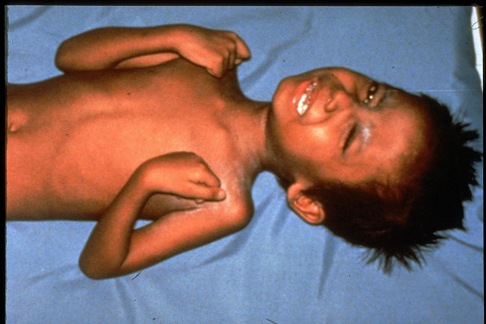
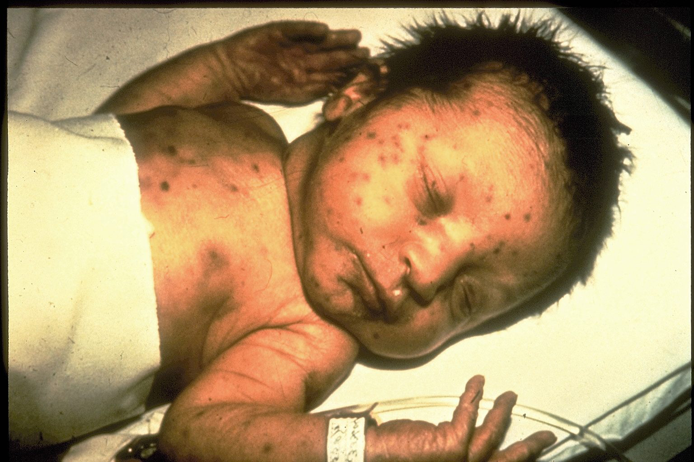

Diseases that previous vaccines have helped us combat.
1. Polio
Polio is a potentially deadly infectious disease with three wild types that target the brain and spinal cord, causing muscle weakness which can lead to paralysis. It spreads through the ingestion of food and water contaminated by an infected person's stool. But thanks to polio eradicating efforts, today, wild polio is found only in Afghanistan and Pakistan, according to the Bill & Melinda Gates Foundation, a partner of the Global Polio Eradication Initiative (GPEI). According to the Centers for Disease Control and Prevention (CDC), the annual number of wild poliovirus cases declined by more than 99.9% worldwide from an estimated 350,000 in 1988 when the GPEI was launched, with the help of vaccines. Moreover, two out of the three types of wild poliovirus have been certified eradicated. Types 2 and 3 have been certified eradicated in 2015 and 2018, respectively. Type 1, although still uncertified, had last evidence of transmission back in September 2018.
2. Tetanus

Tetanus, also known as lockjaw, is an infection contracted through exposure to the spores of a bacteria called Clostridium tetani, usually found in soil, dust, and manure. The bacteria enter the body through cuts, wounds, or burns caused by contaminated objects. When infected, it causes painful muscle contractions, commonly of the jaw and neck muscles, making it hard to open the mouth or swallow. Thankfully, developed tetanus vaccines have exceptionally high efficacy, albeit requiring multiple doses. According to the CDC, experts infer that a complete vaccine series has a clinical efficacy of virtually 100%. A complete series is four doses for those under seven years old while only three doses for those seven years and older. However, to obtain lifetime protection, three more booster shots are needed according to the World Health Organization.
3. Measles

Measles, also known as Rubella, is a highly contagious and potentially deadly disease that spreads through the air when an infected person sneezes or coughs. It usually begins with a high fever about 10 to 12 days after exposure and lasts 4 to 7 days. Moreover, a cough, runny nose, red and watery eyes, and small white spots inside the cheeks can develop at this stage. After these initial symptoms, a rash of tiny red spots breaks out, which begins at the head and spreads to the rest of the body. According to the WHO, an estimated 2.6 million deaths occurred each year due to measles before introducing measles vaccines in 1963. However, this number has severely decreased over time. In more recent times, measles vaccinations have prevented an estimated 23.2 million deaths between 2000-2018, based on the WHO. Furthermore, according to the CDC, the MMR vaccine, one of the vaccines that prevent measles, has shown to be about 93% effective after one dose and about 97% after two.